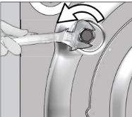
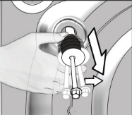
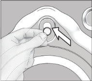
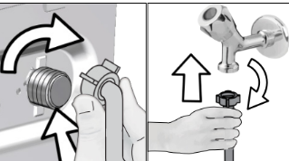

4 Технически спецификации
| Име на доставчика или запазена марка | Beko |
| Име на модела | WUE 7536 XA 7000440026 |
| Височина (см) | 84 |
| Широчина (см) | 60 |
| Дълбочина (см) | 49 |
| Нетно тегло (±4 кг) | 61 |
| Единичен вход за вода / Двоен вход за вода | • / - |
| Налично | |
| Electrical input (V/Hz) | 230 V / 50Hz |
| Общ ел.поток (A) | 10 |
| Обща мощност (W) | 2200 |
| Код на основния модел | 1317 |

|
Информация за модела, която се съхранява в базата данни за продукта може да намерите като посетите следната интернет страница и потърсите идентификатора за вашия модел (*), който се намира на енергийния етикет. https://eprel.ec.europa.eu/
4.1 Монтаж
- За монтажа на вашия продукт се обърнете към най-близкия оторизиран сервиз.
- Подготовката на мястото и електрическата, водната и канализационната инсталация са задължение на клиента.
- Проверете дали входящия и изходящия маркуч, както и захранващия кабел не са прегънати, затиснати или премазани при наместването на продукта на мястото му след монтажа или почистването.
- Уверете се, че монтажът и електрическите връзки на продукта са извършени от упълномощен сервиз. Производителят не носи отговорност за щети, причинени от процедури, извършени от неквалифицирани лица.
- Преди монтажа огледайте уреда за видими дефекти. Ако има такива, не го монтирайте. Повредените уреди носят риск за безопасността ви.
4.1.1 Подходящо място за монтаж
- Поставете продукта на твърд и равен под. Не го поставяйте на килим или на поставка или друга подобна повърхност.
- Когато пералната машина и сушилнята са поставени една върху друга, тяхното общо тегло - когато са заредени - възлиза на 180 килограма. Поставете уреда върху здрав, равен под, способен да издържи на това натоварване!
- Не поставяйте уреда върху захранващия кабел.
- Не монтирайте продукта в среда, където температурата пада под 0 oC.
- Препоръчва се оставянето на пространство отстрани на машината, за да се намалят вибрацията и шума
- На издигнат под, не поставяйте продукта до ръба или на платформа.
- Не поставяйте върху пералната машина източници на топлина, такива като котлони, ютии, фурни и не ги използвайте върху продукта.
4.1.2 Сваляне на блокировките за транспортиране
- Разхлабете всички болтове с подходящ ключ, докато не започнат да се въртят свободно.
- Отстранете транспортните обезопасителни болтове като ги завъртите леко.
- Вкарайте пластмасовите капаци от торбата, съдържаща наръчника на потребителя, в отворите на задния панел.



| ВНИМАНИЕ: Отстранете обезопасяващите болтове за транспортиране преди да използвате пералнята! В противен случай ще повредите уреда. | |
| Съхранявайте болтовете за обезопасено транспортиране, за да може да ги ползвате отново ако се налага пренасяне на пералнята в бъдеще. | |
| Монтирайте транспортните обезопасителни болтове в обратен ред на процедурата за разглобяване. | |
| Никога не пренасяйте пералнята без да сте завили правилно болтовете по местата им! |
4.1.3 Свързване на водопровода
| Водното налягане, необходимо за работата на уреда, трябва да е между 1 и 10 бара (0.1 – 1 MPa). За да работи пералнята Ви нормално, са необходими 10 – 80 литра вода изтичащи от крана за една минута. Ако водното налягане е твърде високо, монтирайте понижаваща налягането клапа. | |
| ВНИМАНИЕ: Моделите с единично водно захранване не се свързват с кран с топла вода. В този случай прането ще се повреди или уредът ще премине в режим на безопасност и няма да работи. | |
| ВНИМАНИЕ: Не използвайте стари или употребявани маркучи с новия уред. Те може да направят петна по дрехите. |

- Затегнете гайките на маркуча на ръка. Никога не използвайте уред за затягането им.
- Когато връзката на маркуча е направена, проверете дали няма течове в точките на свързване като отворите крановете напълно. Ако има изтичане на вода, затворете крана и свалете гайката. Проверете уплътнението и затегнете добре уплътнението. С оглед предотвратяване на течове и последващи щети, дръжте крановете затворени, когато не използвате продукта.
4 / BG